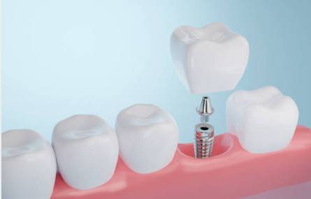

Especialidades

Los implantes dentales son raíces artificiales de titanio que se integran al hueso maxilar, permitiendo reponer piezas perdidas sin afectar a los dientes vecinos. Es el tratamiento de elección para recuperar la seguridad al comer y la estética al sonreír.
Recupere su bienestar con manos expertas.
Consultar por WhatsApp